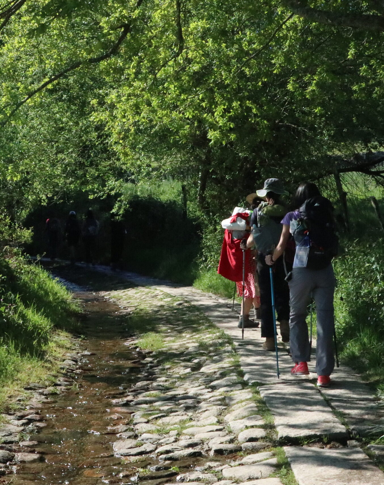

Sara · Easy Camino Santiago
Tu experta en el Camino desde Sarria
¿Te llamamos gratis?
Déjanos tu número y te llamamos en menos de 24h para asesorarte sin compromiso.
Tu número solo se usará para llamarte. Sin spam.
Tu experta en el Camino desde Sarria
Déjanos tu número y te llamamos en menos de 24h para asesorarte sin compromiso.
Tu número solo se usará para llamarte. Sin spam.

Las últimas 100km del Camino Francés. El mínimo para obtener la Compostela oficial. Perfectas para familias, viajeros con tiempo limitado y quienes hacen el Camino por primera vez. Desde 399€ · 5 o 6 etapas · Sin cargar mochila. Si aún estás organizando tu viaje, te recomendamos leer cuántos días se tarda desde Sarria hasta Santiago y qué llevar en la mochila del Camino de Santiago. Y si quieres comparar opciones antes de decidirte, también puedes ver nuestro Camino Portugués organizado.
La opción más inteligente para obtener la Compostela sin sacrificar la experiencia auténtica. Para la mayoría de peregrinos que hacen su primer Camino, este tramo ofrece la mejor relación entre tiempo, emoción y facilidad. Si además quieres calcular presupuesto antes de reservar, puedes consultar nuestra guía sobre cuánto cuesta hacer el Camino de Santiago.
Los 115km desde Sarria superan el mínimo de 100km exigidos por la Catedral de Santiago para obtener la Compostela oficial.
Nuestra agencia está en Lugo, a solo 20 minutos de Sarria. Conocemos cada alojamiento, cada etapa y cada restaurante del trayecto.
Etapas de entre 18 y 25km, bien señalizadas, con mucha infraestructura y paisajes de bosque gallego espectaculares.
Compatible con vacaciones cortas. Puedes hacer el Camino en una semana laboral y regresar a casa con la Compostela en la mano.
Robledales centenarios, aldeas de piedra, cruceiros medievales y el emblemático Camino de Santiago en su tramo más pintoresco.
Desde 399€ por persona con todo incluido. Una experiencia transformadora a un precio accesible, perfectamente organizada.
El precio del Camino de Santiago desde Sarria depende del tipo de alojamiento y de los servicios incluidos. Nuestros paquetes organizados comienzan desde 399€ por persona e incluyen alojamiento, transporte de equipaje, credencial del peregrino y asistencia durante todo el recorrido.
Este tramo del Camino Francés desde Sarria es una de las opciones más accesibles para conseguir la Compostela, combinando comodidad y una duración ideal de 5 o 6 etapas.
Si quieres ver un desglose completo de gastos, puedes consultar nuestra guía sobre cuánto cuesta hacer el Camino de Santiago.
El Camino de Santiago desde Sarria es la opción perfecta si buscas una experiencia auténtica del Camino sin necesidad de disponer de varias semanas.
Si quieres preparar mejor tu experiencia, te recomendamos leer nuestra guía para hacer el Camino de Santiago por primera vez.
Si buscas otras rutas más largas o diferentes, puedes ver también el Camino Portugués o el Camino Inglés.
Solicita tu presupuesto en 24hEl Camino de Santiago desde Sarria se completa normalmente en 5 o 6 días, dependiendo del ritmo de cada peregrino. La distancia total es de unos 100 km, lo que permite obtener la Compostela al llegar a Santiago.
Las etapas están bien señalizadas y cuentan con numerosos servicios, lo que convierte este tramo del Camino Francés en una de las opciones más accesibles para todo tipo de peregrinos.
Si quieres ver una planificación completa, puedes consultar nuestra guía sobre cuántos días se necesitan para hacer el Camino desde Sarria.
5 etapas memorables a través de la Galicia más auténtica
La etapa de bautismo. Cruzas el río Miño por el puente largo de Portomarín, dejando atrás la ciudad de Sarria entre bosques de robles y castaños. Pasas por el monasterio de Barbadelo, uno de los más hermosos del Camino. Llegas a la bonita villa de Portomarín con sus casas de piedra y su iglesia fortaleza románica.
Etapa suave con continuas subidas y bajadas entre aldeas de piedra gris. Cruzas el alto de Ligonde con vistas espléndidas sobre la meseta gallega. La hospitalidad de los pueblos del interior de Galicia te sorprenderá. Llegas a Palas de Rei, centro neurálgico de la etapa con buen ambiente peregrino.
Una de las etapas más variadas. Cruzas el río Pambre y su castillo medieval, pasan por Melide —famosa por su pulpo a feira— y llegas a Arzúa, conocida por su queso de tetilla gallego. Aquí el ambiente peregrino se intensifica notablemente al unirse el Camino Portugués.
La penúltima etapa. Caminas por densos bosques de eucalipto y pinos que crean un ambiente casi mágico. Cruzas aldeas dormidas donde los gallos te despiertan al amanecer. En O Pedrouzo la expectativa es máxima: mañana llegas a Santiago. La emoción se palpa en cada conversación en el albergue.
El día más especial. Cruzas el Monte do Gozo —el "Monte de la Alegría"— desde donde ves por primera vez las torres de la Catedral. Entras en Santiago por el casco histórico declarado Patrimonio de la Humanidad. La Plaza del Obradoiro te espera con su abrazo al Apóstol y la Misa del Peregrino. Un momento que nunca olvidarás.
💡 Opción 6 etapas: Podemos dividir la etapa Palas de Rei → Arzúa en dos días para un ritmo más tranquilo. Ideal para familias con niños o personas con menos forma física.
Todo incluido. Elige tu tipo de alojamiento preferido.
Hoteles y casas rurales con encanto seleccionados en las principales etapas del recorrido
✓ Precios por persona · ✓ Suplemento individual consultar · ✓ Grupos de 6+ personas: precio especial. Si quieres saber cuál es la temporada más recomendable para hacer esta ruta, revisa también nuestra guía sobre la mejor época para hacer el Camino de Santiago.
📅 Reserva con solo el 30%. Resto 30 días antes de la salida. Cancelación gratuita hasta 21 días antes.
Todo lo que necesitas para completar el Camino sin preocupaciones.
Seleccionamos los mejores albergues, pensiones u hoteles en cada etapa. Todo confirmado antes de tu salida.
Tu equipaje viaja cada día al siguiente alojamiento. Caminas libre con solo una mochila pequeña de día. Servicio en 5 etapas.
Te la enviamos por correo antes de salir. Consigue los sellos en cada etapa y obtén tu Compostela oficial en Santiago.
Documento completo con cada etapa, distancias, desniveles, puntos de interés, dónde comer y dónde sellar la credencial.
Sara y nuestro equipo disponibles durante todo el Camino. Para cualquier imprevisto, duda o cambio de planes sobre la marcha.
Te explicamos exactamente dónde y cómo recoger tu Compostela en la Oficina del Peregrino de Santiago de Compostela.
No incluye: Vuelos/transporte hasta Sarria, comidas (excepto desayuno), actividades opcionales en Santiago. El transporte desde Lugo hasta Sarria (20 min) lo podemos gestionar por +15€/persona.
Todo lo que necesitas saber antes de hacer el Camino
Guías prácticas para planificar cada detalle antes de salir
La lista definitiva: ropa técnica, calzado, botiquín y lo que no necesitas llevar.
Leer más → PresupuestoDesglose real de gastos: alojamiento, comida, transporte y extras. Desde 35€/día.
Leer más → PlanificaciónMayo, junio y septiembre concentran el 60% de peregrinos. Descubre qué mes es mejor para ti.
Leer más →Solicita tu presupuesto personalizado gratis. Sara te llama en menos de 24h.
Pedir presupuesto gratis →O escríbenos directamente: 982 907 629